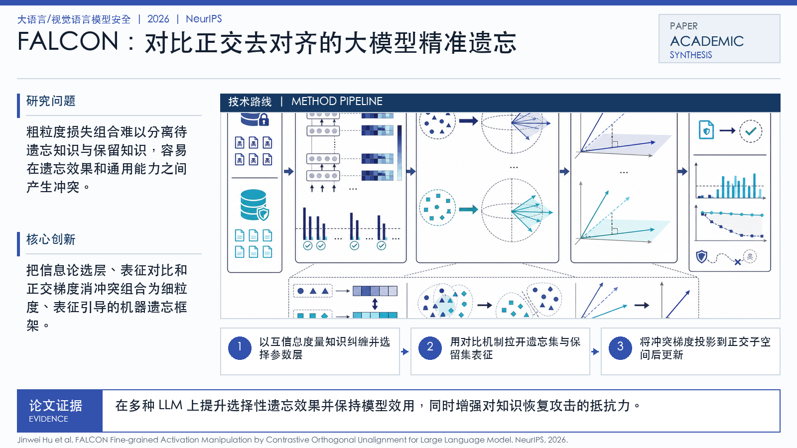

Problem
解决的问题
粗粒度损失组合难以分离待遗忘知识与保留知识，容易在遗忘效果和通用能力之间产生冲突。
Research on LLMs and VLMs · 2026 · NeurIPS
FALCON Fine-grained Activation Manipulation by Contrastive Orthogonal Unalignment for Large Language Model
Problem
粗粒度损失组合难以分离待遗忘知识与保留知识，容易在遗忘效果和通用能力之间产生冲突。
Value
在多种 LLM 上提升选择性遗忘效果并保持模型效用，同时增强对知识恢复攻击的抵抗力。
Paper-grounded Academic Summary
该代表页依据原文摘要、贡献段与方法图注生成。方法视觉由 ImageGen 按论文证据逐篇绘制，中文研究问题、技术路线、创新点与实验结论采用确定性排版，以保证内容与字符准确。
打开原文 PDF
Technical Route
Innovation